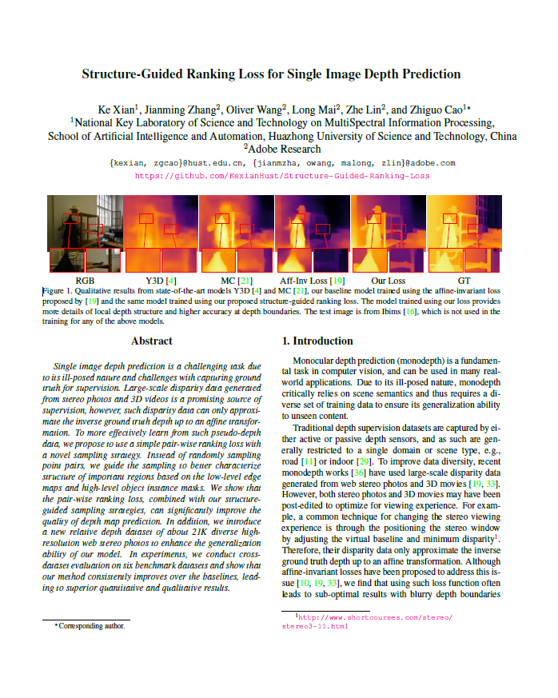

Structure-Guided Ranking Loss for Single Image Depth Prediction
1Huazhong University of Science and Technology
2Adobe Research
|
Abstract
Single image depth prediction is a challenging task due to its ill-posed nature and challenges with capturing ground truth for supervision. Large-scale disparity data generated from stereo photos and 3D videos is a promising source of supervision, however, such disparity data can only approximate the inverse ground truth depth up to an affine transformation. To more effectively learn from such pseudo-depth data, we propose to use a simple pair-wise ranking loss with a novel sampling strategy. Instead of randomly sampling point pairs, we guide the sampling to better characterize structure of important regions based on the low-level edge maps and high-level object instance masks. We show that the pair-wise ranking loss, combined with our structure-guided sampling strategies, can significantly improve the quality of depth map prediction. In addition, we introduce a new relative depth dataset of about 21K diverse high-resolution web stereo photos to enhance the generalization ability of our model. In experiments, we conduct cross-dataset evaluation on six benchmark datasets and show that our method consistently improves over the baselines, leading to superior quantitative and qualitative results.
Paper
|  |
K. Xian, J. Zhang, O. Wang, L. Mai, Z. Lin, and Z. Cao.
Structure-Guided Ranking Loss for Single Image Depth Prediction
CVPR 2020.
[pdf]
[Bibtex]
|
Video
Code and data
Acknowledgements
This work was supported in part by the National Natural Science Foundation of China (Grant No. 61876211 and U1913602) and the Adobe Gift. Part of the work was done when KX was an intern at Adobe Research. This webpage template was borrowed from colorful folks.
|